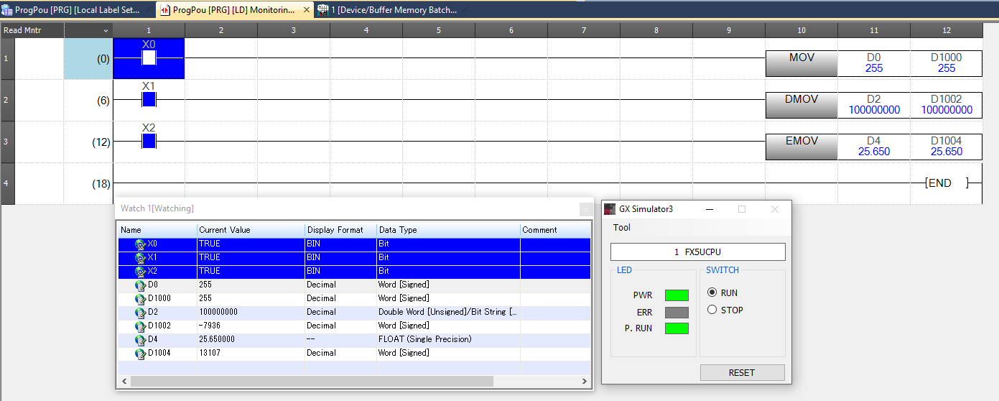
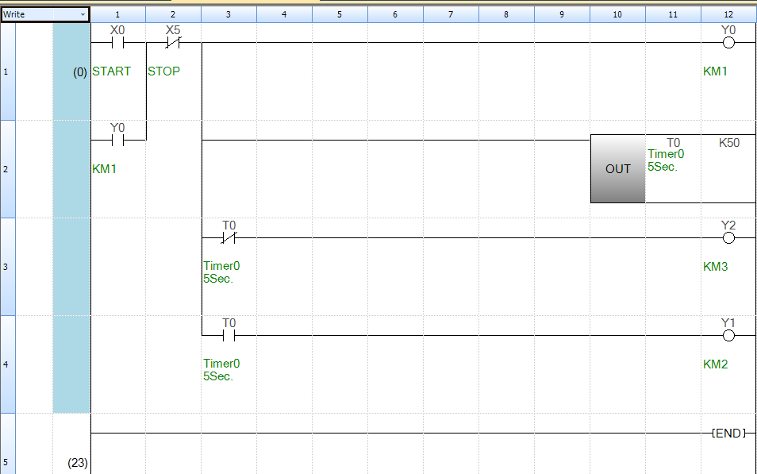
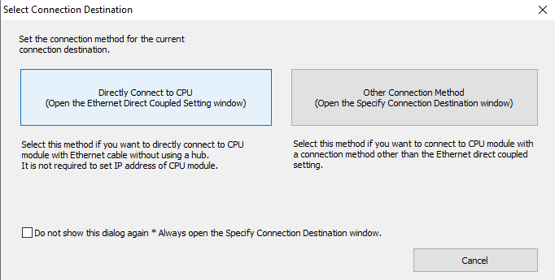
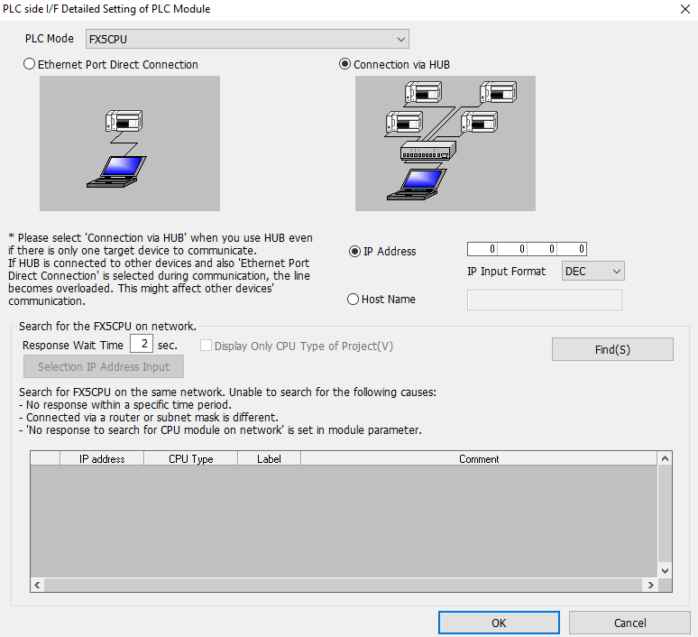
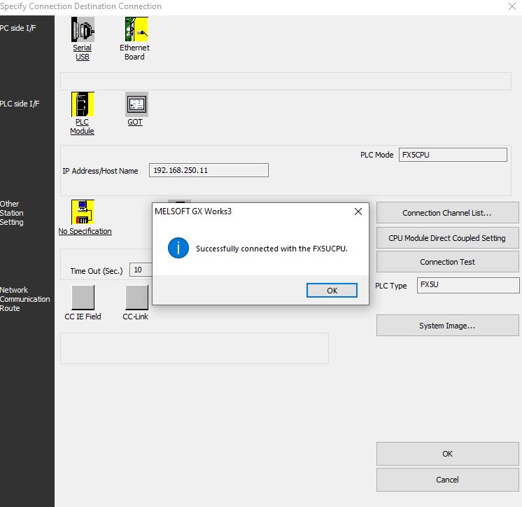

การจำลองด้วย GX Simulator
ก่อนยิงโปรแกรมเข้า PLC จริง เราต้องทดสอบใน GX Simulator ก่อน — เพื่อจับ Logic ผิดและเซฟทั้ง PLC, ทั้งคน, ทั้งเครื่องจักร บทนี้พาทำตามตั้งแต่สร้าง Project, เขียน Ladder ตัวอย่าง Star–Delta, ไปจนถึง Monitor ค่าจริง ๆ
เปิด GX Works3 ครั้งแรก
-
สร้าง Project ใหม่
เมนู
Project → New→- Series: FX5CPU
- Type: FX5U
- Program Language: Ladder
MAINให้ -
ตั้งค่า PLC Parameter
เปิด
Parameter → FX5UCPU → CPU Parameter— สำหรับการจำลอง ค่า default ใช้ได้ทันที แต่จำว่า Project นี้ตั้งเป็น FX5U ไว้แล้ว (สำคัญตอนจะโหลดเข้า PLC จริง) -
เปิดหน้า Ladder Editor
ดับเบิลคลิกที่
Program → MAIN → ProgPou → ProgramBodyใน Navigation pane ซ้ายมือ — จะเห็นกระดาษเปล่าให้วาด Ladder -
เขียน Rung แรก
กดปุ่ม F5 = วาง Contact NO · F6 = NC · F7 = Coil · F8 = Coil/Function
หรือใช้ Toolbar รูปสัญลักษณ์ Ladder ด้านบน -
ใส่ Device Name
คลิกที่ Contact → พิมพ์
X0→ Enter — ทำซ้ำสำหรับทุก Contact และ Coil -
Convert (F4)
ทุกครั้งที่แก้ Ladder ต้องกด F4 (หรือ
Convert → Convert) เพื่อ Compile — ถ้าผิด syntax จะ Error สีเทา ๆ ที่ Rung
Shortcut ที่ใช้บ่อยที่สุด
F4 = Convert · F5 = Contact NO · F6 = Contact NC · F7 = Coil ·
F8 = Application Instruction (MOV, BMOV, ZRST ฯลฯ) ·
Shift+F5 = แทรก Rung ·
Ctrl+S = Save Project

FX5UCPU สถานะ RUN — Ladder ฝั่งซ้ายแสดง MOV/DMOV/EMOV ที่ทำงานอยู่จริง, Watch Window แสดงค่าสดเริ่ม Simulator
-
กด Simulation Start
เมนู
Debug → Start/Stop Simulationหรือกดปุ่มรูปจอ Simulator ที่ Toolbar — หน้าต่าง "GX Simulator3" จะเด้งขึ้นมา ตั้งให้อยู่ข้างหน้าจอ Ladder - โปรแกรมจะถูก Download อัตโนมัติ Simulator จะเลียนแบบ FX5U ตัวจริงและรับโปรแกรมที่เพิ่ง Convert — สถานะของ PLC ใน Simulator จะเป็น RUN โดยอัตโนมัติ
-
เปิด Device Monitor
เมนู
Online → Watch → Register Watch Window 1— พิมพ์X0,X1,Y0,T0,D10ฯลฯ ลงไป เพื่อดูค่าทั้งหมดในที่เดียว -
Force ค่า Input
ใน Ladder Editor (ตอน Simulation รันอยู่) ดับเบิลคลิกที่ X0 → จะมี Dialog ให้กด ON/OFF
— หรือใช้เมนู
Debug → Modify Value - ดู Animation บน Ladder Contact ที่ ON จะ เขียวสว่าง ส่วน Coil ที่ ON จะ ส้มสว่าง — เหมาะกับการ debug Logic แบบ visual
ตัวอย่างจริง — Star–Delta Motor Starter ใน Simulator
เอาโปรแกรม Star–Delta จาก M02 — Ladder Logic มา Simulate

Step 1 — เขียน Ladder ทั้งสามรัง
; Rung 1 — Main Contactor
LD X0 OR Y0 ANI X1 AND X2 OUT Y0
; Rung 2 — Star (ON ระหว่าง T0 ยังไม่ครบ)
LD Y0 ANI T0 OUT Y1
LD Y0 OUT T0 K50 ; 5.0 วินาที
; Rung 3 — Delta (ON หลัง T0 ครบ, Interlock กับ Y1)
LD T0 ANI Y1 AND Y0 OUT Y2Step 2 — สร้าง Test Sequence
-
ตั้งค่าเริ่มต้น
Force
X1 = OFF,X2 = ON(Overload OK),X0 = OFF→ ทุก Output ต้อง OFF -
กด Start
Force
X0 = ONครู่หนึ่งแล้ว OFF — ดูว่า:Y0(Main) ON ค้าง (เพราะ self-hold)Y1(Star) ON ทันทีT0เริ่มนับขึ้นเรื่อย ๆ
-
รอครบ 5 วินาที
เมื่อ
T0ครบ K50:Y1(Star) ต้อง OFFY2(Delta) ต้อง ON
-
กด Stop
Force
X1 = ON→ ทุก Output ต้อง OFF -
ทดสอบ Overload
ตอนมอเตอร์ติด, Force
X2 = OFF(จำลอง Overload trip) → ทุก Output ต้องตัดทันที
ทำไม X2 ใช้ AND ไม่ใช่ ANI?
เพราะ Overload Relay เวลาปกติ contact NC จะเป็น Closed
→ PLC อ่านเป็น ON → ใช้ AND กับ X2 → ถ้า Overload trip → X2 OFF → ตัดวงจร
จาก Simulator ไป PLC จริง
เมื่อโปรแกรม Simulate ผ่านแล้ว ต้องการ Download เข้า PLC จริง:
-
เปิด Current Connection Destination
เมนู
Online → Current Connection Destination... -
เลือกวิธีเชื่อมต่อ

เลือก Directly Connect to CPU ถ้าต่อสาย LAN ตรง หรือ Other Connection Method ถ้าผ่าน Switch/Hub -
ตั้งค่า Ethernet

เลือก Connection via HUB (ใช้ Switch) → ใส่ 192.168.250.11→ กด Find(S) ระบบจะสแกนหา CPU ในเครือข่าย -
กด Connection Test
ถ้าทุกอย่างถูก จะได้กล่อง popup "Successfully connected with the FX5UCPU"

-
เขียนโปรแกรมเข้า PLC
Online → Write to PLC...→ เลือก Parameter + Program + Comment → กด Execute
🌐 IP & Subnet — เช็คก่อนต่อ
ปัญหาที่เจอบ่อยที่สุดเวลาต่อ Ethernet PLC: PC กับ PLC อยู่คนละ Subnet กัน → เจอกันไม่เจอ ใส่ IP ผิด Subnet Mask ก็เจอกันไม่ได้ · ลองเช็คก่อน:
การ Debug ที่นิยมในห้อง Lab
DEBUG 01
Force I/O
เปิด/ปิด Bit ตัวใดก็ได้ระหว่าง Simulate — ใช้แทน Hardware ที่ยังไม่มี
DEBUG 02
Step Execution
Debug → Step → Step Execution — รัน 1 Scan ทีละครั้ง ดู State ค่อย ๆ เปลี่ยน
DEBUG 03
Breakpoint
วาง Breakpoint ใน Rung → Simulator จะ pause เมื่อเงื่อนไขถึง — เหมาะกับโปรแกรมยาว ๆ
DEBUG 04
Sampling Trace
บันทึกค่าของ device หลายตัวเทียบกับเวลา — เห็น Timing diagram ได้
Pitfalls ที่นิสิตชอบเจอ
1. ลืม Convert (F4) แล้ว Simulate
ถ้าแก้ Ladder แต่ไม่ F4 — Simulator จะรัน โปรแกรมเก่า อยู่ ทำให้งงทำไมไม่เปลี่ยนตามที่แก้
2. ใช้ Y ซ้ำใน 2 Rung
ใน Ladder ห้ามมี
OUT Y0 ปรากฏใน 2 Rung — Rung ที่อยู่ล่างจะ override ตัวบนเสมอ
ใช้ SET/RST แทน หรือรวม Logic ให้อยู่ในRung เดียว
3. Timer Number ชน
ใช้
T0 ในหลาย Rung โดยมี OUT T0 สองที่ — ผลลัพธ์จะเพี้ยน
Timer Number ต้องไม่ซ้ำในทั้งโปรแกรม
ก่อนไปต่อ
- F5/F6/F7/F8 + F4 (Convert) — รู้คีย์ลัดพอแล้ว เขียน Ladder จะเร็วมาก
- Simulate ทุกโปรแกรมก่อนยิงเข้าจริง — เซฟทั้งเงินและตัวคุณเอง
- Force I/O และ Device Monitor คือเครื่องมือ Debug หลัก
- Watch out: ลืม Convert, OUT ซ้ำ, Timer ชน
วิดีโอประกอบ
ดูตัวอย่าง Simulate Star–Delta แบบจริง ๆ ได้ใน
EP3 — Star/Delta Simulation